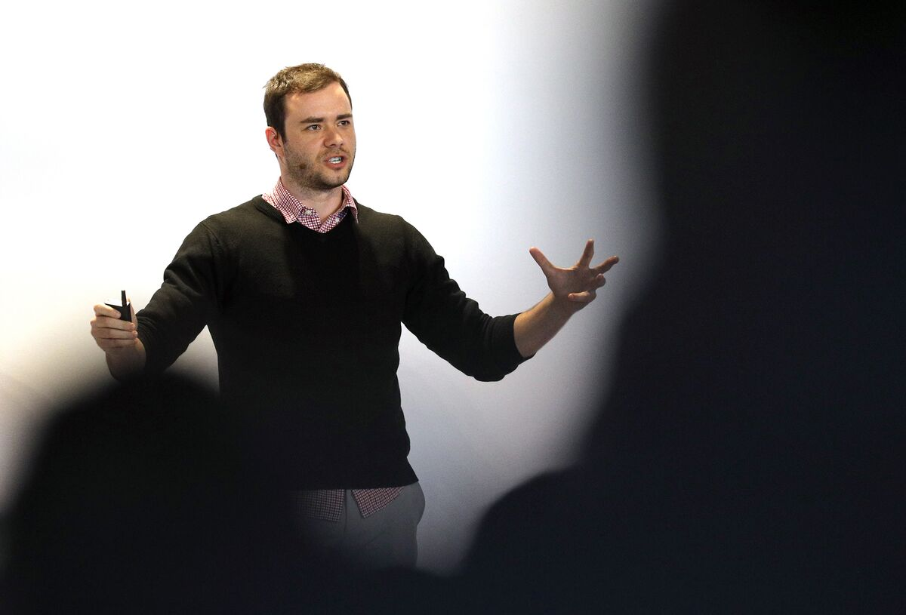
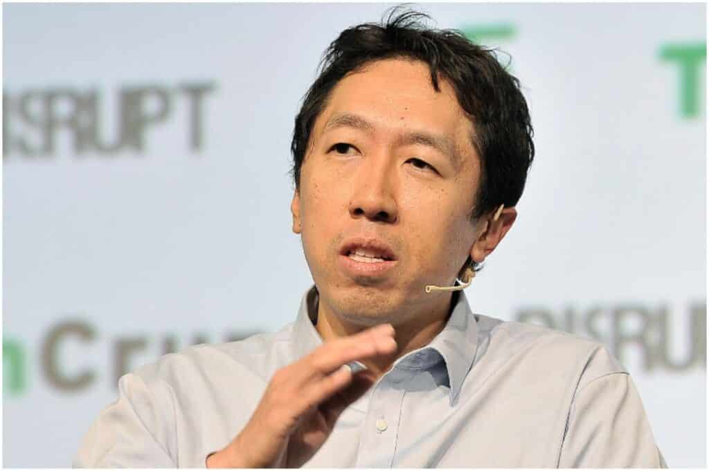

AI Industry Leaders
Exclusive CEO Insights

Sam Altman: OpenAI CEO

Andrej Karpathy: Ex-Tesla AI Head

Exclusive CEO Insights
Sam Altman is a prominent figure in the technology industry, renowned for his multifaceted contributions as an entrepreneur, investor, and visionary leader. Raised in St. Louis, Missouri, Altman demonstrated early entrepreneurial spirit by launching his first startup while still in high school. He went on to study computer science at Stanford University but left before completing his degree to pursue his entrepreneurial aspirations. Altman's career trajectory is marked by notable achievements and influential roles in the startup ecosystem. He co-founded Loopt, a location-based social networking app, which was acquired by Green Dot Corporation in 2012. Following the acquisition, Altman became the CEO of OpenAI, a research organization focused on artificial intelligence, where he played a pivotal role in shaping the organization's mission and strategy. In addition to his entrepreneurial ventures, Altman is highly regarded for his role as the president of Y Combinator, one of the world's most prestigious startup accelerators. Under his leadership, Y Combinator has nurtured and mentored countless startups, providing them with the resources and guidance needed to succeed. Altman's insights and expertise have helped shape the startup landscape, and his contributions to the entrepreneurial community are widely recognized. Beyond his work with startups, Altman is an active investor and advisor, supporting a diverse portfolio of companies across various sectors. He has a keen eye for identifying promising startups and has played a significant role in the success of many notable companies. Altman's influence extends beyond the realm of technology; he is also a vocal advocate for issues such as universal basic income and human longevity. His forward-thinking approach to addressing societal challenges has earned him respect and admiration from peers and colleagues alike. Overall, Sam Altman's impact on the technology industry and the startup ecosystem is profound and far-reaching. His entrepreneurial spirit, visionary leadership, and commitment to innovation continue to inspire and shape the future of technology. As he continues to invest in and mentor the next generation of entrepreneurs, Altman's legacy will endure as a driving force for positive change in the tech world.
Andrej Karpathy is a highly influential figure in the field of artificial intelligence (AI), renowned for his contributions to both academia and industry. As the former Senior Director of AI at Tesla and a key member of OpenAI, Karpathy has played a pivotal role in shaping the development and implementation of AI technologies. Karpathy's career began with a strong academic foundation, earning a Ph.D. in computer vision and machine learning from Stanford University. His research focused on deep learning and its applications, particularly in the field of computer vision. Karpathy's academic work garnered widespread recognition and laid the groundwork for his subsequent contributions to the industry. In his role as Senior Director of AI at Tesla, Karpathy led the development of AI technologies for autonomous driving and other applications within the company's vehicles. His expertise in deep learning and computer vision proved invaluable in advancing Tesla's efforts to integrate AI into its vehicles, pushing the boundaries of what is possible in autonomous transportation. In addition to his work at Tesla, Karpathy has been actively involved with OpenAI, a research organization dedicated to advancing AI in a responsible and ethical manner. As a key member of OpenAI, Karpathy has contributed to cutting-edge research and development initiatives, furthering the organization's mission to ensure that AI benefits humanity as a whole. Karpathy's influence extends beyond his specific roles at Tesla and OpenAI; he is widely recognized as a thought leader in the field of AI and has made significant contributions to the advancement of the field. His research, insights, and expertise continue to shape the future of AI, driving innovation and progress in both academia and industry. Overall, Andrej Karpathy's impact on the field of artificial intelligence is profound and far-reaching. His work at Tesla and OpenAI exemplifies his commitment to pushing the boundaries of AI technology and harnessing its potential to drive positive change in society. As AI continues to evolve and transform various industries, Karpathy's contributions will undoubtedly remain at the forefront of the field.
Andrew Ng is a prominent figure in the field of artificial intelligence (AI) and machine learning (ML), known for his significant contributions to research, education, and industry. Born in London and raised in Hong Kong, Ng's journey into AI began during his undergraduate studies at Carnegie Mellon University, where he developed a keen interest in robotics and AI. He later pursued graduate studies at the Massachusetts Institute of Technology (MIT) and earned his Ph.D. in computer science. Ng's career trajectory includes notable roles at some of the most prestigious institutions and companies in the tech industry. He served as a professor at Stanford University, where he founded the Stanford AI Lab and co-founded Google Brain, Google's deep learning research project. Ng's work at Google laid the groundwork for many breakthroughs in AI and helped propel the field forward. In addition to his academic and industry endeavors, Ng is a highly respected educator and advocate for AI literacy. He co-founded Coursera, an online learning platform offering courses in various subjects, including machine learning and AI. Ng's machine learning course on Coursera has attracted millions of learners worldwide, making it one of the most popular online courses in the field. Ng's influence extends beyond academia and industry; he is also an entrepreneur and investor, supporting numerous AI startups and initiatives. He founded Landing AI, an AI company focused on helping businesses implement and scale AI solutions effectively. Ng's vision for democratizing AI and making it accessible to everyone has shaped his career and continues to drive his efforts to advance the field. Overall, Andrew Ng's impact on AI research, education, and industry is profound and far-reaching. His pioneering work has helped shape the trajectory of AI development and has inspired countless individuals to pursue careers in the field. As AI continues to evolve and transform various industries, Ng's contributions remain integral to its advancement.